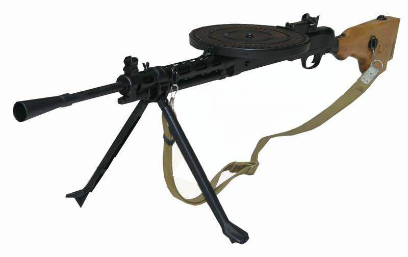
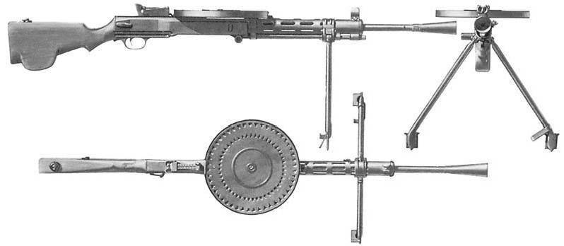
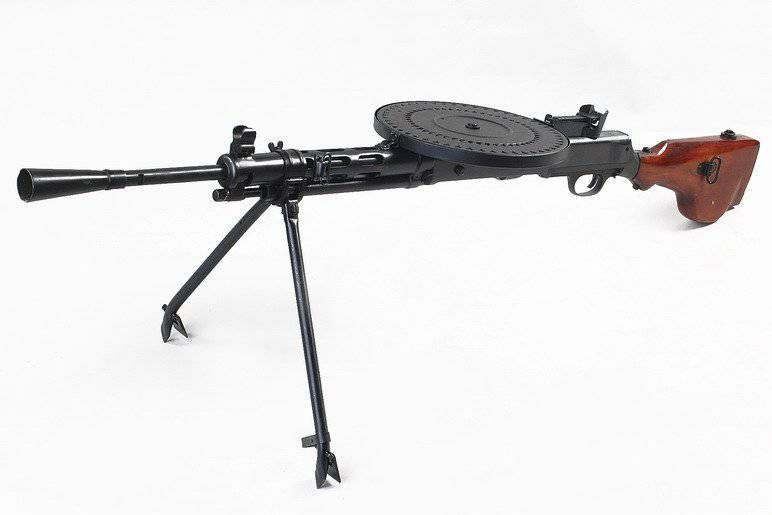
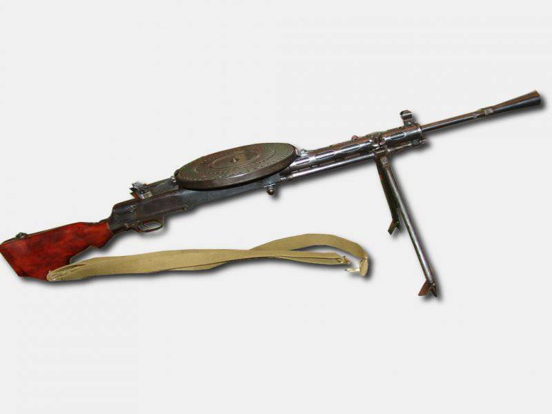
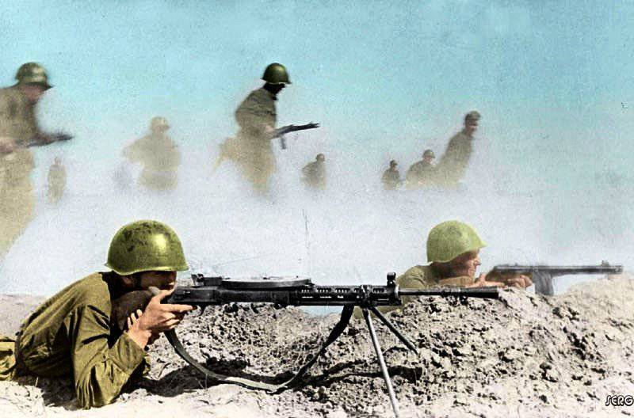
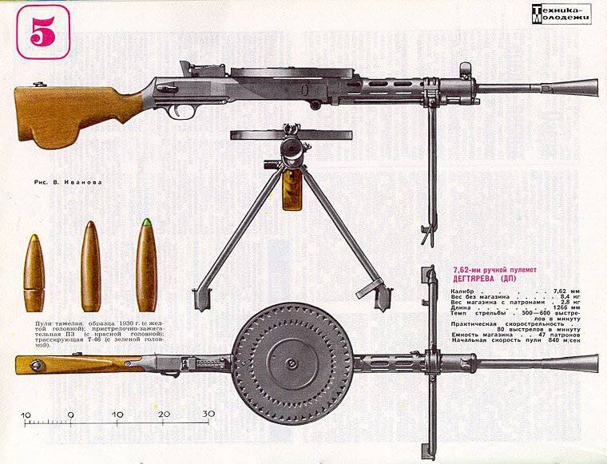
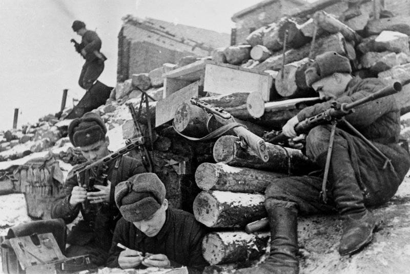
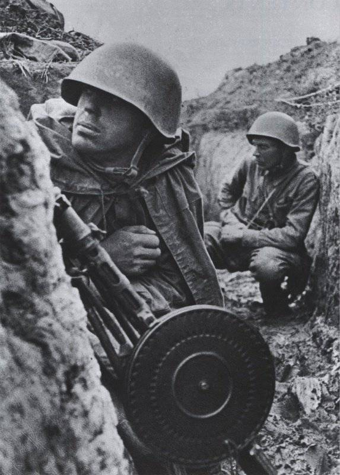
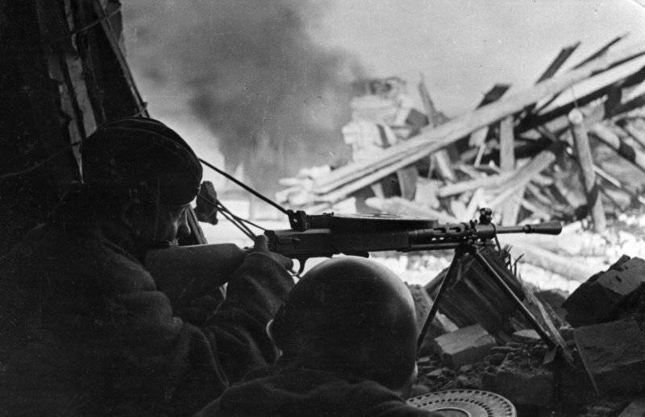

Пулемет ручной Дегтярева 1943 года
Одной из самых насущных проблем вооружения пехоты, возникшей в Первую мировую, стало наличие ручного пулемета, способного во всех видах боя и в любых условиях действовать в пехотных боевых порядках, оказывая непосредственную огневую поддержку пехоте. Россия во время войны приобретала ручные пулеметы («ружья-пулеметы») у других государств. Однако французские пулеметы Шоша, а также английские Льюиса, которые имели более удачную конструкцию, к середине 1920-х годов были изношены, системы данных пулеметов являлись устаревшими, кроме того наблюдалась катастрофическая нехватка ЗИП. Планировавшаяся на 1918 г. постановка на производство пулемета «Мадсен» (Дания) под русский патрон на образованном в г. Коврове заводе не состоялась. В начале 20-х вопрос о разработке ручного пулемета поставили как первоочередной в системе вооружений РККА — согласно общепринятым взглядам, именно данный пулемет давал возможность решить проблему сочетания движения и огня на уровне мелких подразделений в новых условиях. Пулемет становился основой для новой «групповой тактики» пехоты. В 22 году образовали «образцовые» («показные») роты главной задачей которых было культивирование групповой тактики, а также насыщение пехоты автоматическим оружием, которого не хватало катастрофически. Когда в 1924 году по новым штатам во все стрелковые взводы ввели пулеметное отделение, из-за нехватки ручных пулеметов его пришлось вооружать одним станковым и одним ручным пулеметом. Работы над ручным пулемета были развернуты на «Первых Тульских оружейных заводах», Ковровском пулеметном заводе и полигоне курсов «Выстрел». В Туле Ф.В. Токарев и на курсах «Выстрел» И.Н. Колесников в качестве временного решения задачи создавали ручной пулемет с воздушным охлаждением – по типу MG.08/18 (Германия) - за основу был взят серийно выпускаемый станковый «Максим». КБ Ковровского завода осуществляло работы на дальнюю перспективу. В данном проектно-конструкторском бюро под руководством Федорова и его ученика Дегтярева велись опытные работы над унифицированным семейством 6,5-миллиметрового автоматического оружия. За основу был взят автомат Федорова (необходимо отметить, что сам «автомат» изначально носил название «ручное ружье-пулемет», то есть рассматривался не в качестве индивидуального оружия, а в качестве облегченного ручного пулемета для вооружения небольших групп пехоты). В рамках данного семейства разработали несколько вариантов ручных, станковых, «универсальных», авиационных и танковых пулеметов имеющих различные схемы охлаждения ствола и питания. Однако ни один из универсальных или ручных пулеметов Федорова или Федорова-Дегтярева к массовому производству принят не был.

Василий Алексеевич Дегтярев (1880-1949 гг.) начальник мастерской ПКБ Ковровского завода к разработке собственного образца ручного пулемета приступил в конце 1923 года. За основу Дегтярев взял схему собственного автоматического карабина, которую предложил еще в 1915 году. Тогда изобретатель, совместив известные схемы газоотводной автоматики (боковое газоотводное отверстие, размещенное снизу ствола), запирания канала ствола при помощи двух боевых упоров, разводимых ударником и собственные решения, получил компактную систему, которая заслужила одобрительный официальный отзыв Федорова. 22 июля 1924 г. Дегтяревым был представлен первый опытный образец пулемета имеющего дисковый магазин. Комиссию возглавлял Н.В. Куйбышев, начальник школы «Выстрел», Председатель Стрелкового комитета Рабоче-Крестьянской Красной Армии. Комиссией были отмечены «выдающаяся оригинальность идеи, скорострельность, безотказность работы и значительная простота в обращении системы товарища Дегтярева». Следует отметить, что тогда же комиссия рекомендовала для принятия на вооружение военно-воздушных сил Рабоче-Крестьянской Красной Армии спаренный авиационный 6,5-миллиметровый пулемет Федорова-Дегтярева. Опытный образец пулемета Дегтярева и пулеметы Колесникова и Токарева, 6 октября 1924 года испытывались на стрельбище в Кусково, однако выбыл из конкурса, поскольку вышел из строя боек. Комиссией по выбору образца ручного пулемета (председатель С.М. Буденный) вскоре был рекомендован для принятия на вооружение РККА ручной пулемет Максима-Токарева. Его приняли под обозначением МТ в 1925 году.
Ручной пулемет ДП
Следующий опытный образец Дегтяревым был представлен осенью 1926 года. 27-29 сентября из двух экземпляров было сделано около пяти тыс. выстрелов, при этом было выяснено выбрасыватель и ударник имеют слабую силу, а само оружие чувствительно к запылению. В декабре провели испытания следующих двух пулеметов в неблагоприятных условиях стрельбы, дали на 40000 выстрелов всего 0,6% задержек, однако их также вернули на доработку. Одновременно с этим испытывали усовершенствованный образец Токарева а также германский «легкий пулемет» Дрейзе. Образец Дегтярева, по результатам испытаний, превзошел переделочную систему Токарева и пулемет Дрейзе, который тогда вызывал большой интерес у руководства Рабоче-Крестьянской Красной Армии и, кстати, имевший вариант с дисковым магазином большой емкости. Несмотря на это Дегтяреву пришлось в свою конструкцию внести ряд изменений: благодаря изменению формы и использования хромоникелевой стали упрочнили затворную раму, из такой же стали были изготовлены шток поршня и выбрасыватель, для упрочнения ударника ему придали форму близкую к форме ударника пулемета Льюиса. Необходимо отметить, что некоторые конструктивные решения в пулеметах Дегтярева были выполнены под явным влиянием досконально изученных ручных пулеметов «Мадсен», «Льюис» и «Гочкис» (Ковровский завод обладал полными комплектами чертежей, а также готовыми образцами «Мадсен», в годы Гражданской войны здесь ремонтировались пулеметы «Льюис»). Однако в целом оружие имело новую и оригинальную конструкцию. Два экземпляра пулемета Дегтярева после доработки прошли испытания комиссией Арткома Артиллерийского Управления РККА на Ковровском заводе 17-21 января 1927 года. Пулеметы были признаны «выдержавшими испытания». 20 февраля также Комиссия признала «возможным предъявить пулеметы как образцы для проведения всех последующих работ и соображений по установке их на производство». Не дожидаясь результатов доработок, было принято решение выдать заказ на сто пулеметов. 26 марта Арткомом были утверждены разработанные ПКБ Ковровского завода «Временные ТУ на приемку ручного пулемета Дегтярева».

Первую партию из 10 пулеметов представили военной приемке 12 ноября 1927 года, партию в 100 пулеметов военный приемщик полностью принял уже 3 января 1928 года. 11 января Реввоенсовет дал указание передать 60 пулеметов для проведения войсковых испытаний. Кроме того, пулеметы направлялись в военно-учебные заведения различных военных округов, с тем, чтобы одновременно с испытаниями командный состав мог знакомиться с новым оружием при лагерных сборах. Войсковые и полигонные испытания продолжались в течение всего года. По результатам испытаний проведенных в феврале на Научно-испытательном оружейно-пулеметном полигоне и курсах «Выстрел» было рекомендовано добавить в конструкцию пламегаситель призванный уменьшить демаскирующее и ослепляющее действия дульного пламени в сумерки и ночное время. Кроме того был высказан и ряд других замечаний. В августе 1928 года испытали усовершенствованный образец имеющий пламегаситель и несколько измененный патрубок регулятора газовой камеры. На 27-28 года выдали заказ на 2,5 тыс. пулеметов. При этом на специальном совещании 15 июня 1928 года, в котором принимали участие руководители Главного военно-промышленного управления и Наркомата обороны, признавая сложности постановки крупносерийного производства нового пулемета, установили 29-30 годы в качестве предельного срока для его установления с полностью взаимозаменяемыми частями. В конце 28 года было принято решение прекратить производство пулеметов МТ (Максима–Токарева). В результате ручной пулемет Дегтярева попал в РККА до его официального принятия. Пулемет был принят под обозначением «7,62-мм ручной пулемет обр. 1927 г.» или ДП («Дегтярева, пехотный»), также встречалось обозначение ДП-27. Пулемет Дегтярева стал первым массовым пулеметом отечественной разработки и вывел ее автора в число главных и самых авторитетных оружейников страны.
Основные части пулемета: сменный ствол с пламегасителем и газовой камерой; ствольная коробка с прицельным устройством; цилиндрический кожух ствола с мушкой и направляющей трубкой; затвор с ударником; затворная рама и шток поршня; возвратно-боевая пружина; спусковая рама с прикладом и спусковым механизмом; дисковый магазин; складные съемные сошки.

Ствол в ствольной коробке крепился прерывчатыми винтовыми выступами, для фиксации использовался флажковый замыкатель. На средней части ствола имелось 26 поперечных ребер призванных улучшить охлаждение. Однако на практике оказалась, что эффективность данного радиатора была очень низкой и, начиная с 1938 года оребрение устранили, что упростило производство. На дульной части ствола при помощи резьбового соединения крепился конический пламегаситель. Во время марша пламегаситель для сокращения длины ДП крепили в перевернутом положении.
А автоматике пулемета была реализована схема работы за счет отвода через боковое отверстие пороховых газов. Отверстие было выполнено в стенке ствола на расстоянии 185 миллиметров от дульного среза. Газовый поршень имел длинный ход. Газовая камера – открытого типа, с патрубком. Шток поршня жестко связанный с затворной рамой и возвратно-боевая пружина, надетая на шток, помещались под стволом в направляющей трубке. Газовый поршень навинчивался на передний конец штока, при этом фиксировал возвратно-боевую пружину. При помощи патрубкового регулятора имеющего два газоотводных отверстия диаметром 3 и 4 миллиметра осуществлялась регулировка количества отводимых пороховых газов. Запирание канала ствола осуществлялось при помощи пары боевых упоров, укрепленных по бокам затвора на шарнирах и разводимых расширенной задней частью ударника.

Спусковой механизм состоял из спускового крючка, спускового рычага с шепталом, автоматического предохранителя. Предохранителем подпирался спусковой крючок сзади. Для его выключения необходимо ладонью полностью охватить шейку приклада. УСМ был рассчитан лишь на ведение непрерывного огня.
Магазин, крепившийся сверху ствольной коробки, состоял из пары дисков и пружины. Патроны в магазине размещались по радиусу носком пули к центру. Усилием улиткообразной спиральной пружины, которая закручивалась при снаряжении магазина, верхний диск вращался относительно нижнего, при этом к окну приемника подавались патроны. Магазин данной конструкции разработали ранее для авиапулемета Федорова. Первоначально требованиями к ручному пулемету предполагалось, что система питания будет иметь 50 патронов, однако дисковый «магазин Федорова» рассчитанный на пятьдесят 6,5-миллиметровых патронов был готов к производству, было принято решение сохранить его базовые габариты, уменьшив емкость барабана до 49 7,62-миллиметровых патронов. Необходимо ответить, что конструкция магазина с радиальным размещением патронов смогла решить проблему надежности системы питания при использовании отечественного винтовочного патрона с выступающей закраиной гильзы. Однако, вскоре емкость магазина была уменьшена до 47 патронов поскольку силы пружины не хватало чтобы подавать последние патроны. Радиальные выштамповки дисков и кольцевые ребра жесткости были призваны уменьшить их погиб во время сотрясений и ударов, а также уменьшить вероятность «заедания» магазина. В колодке прицела монтировалась подпружиненная защелка магазина. На марше окно приемника ствольной коробки прикрывалось специальным щитком, который перед установкой магазина сдвигался вперед. Для снаряжения магазина использовали специальный прибор ПСМ. Необходимо отметить, что магазин имеющий диаметр 265 миллиметров создавал при переноске пулемета во время боя некоторые неудобства. После израсходования части боезапаса оставшиеся патроны при передвижениях создавали заметный шум. Кроме того ослабление пружины приводило к тому, что в магазине оставались последние патроны – из-за этого расчеты предпочитали не полностью снаряжать магазин.

Как и во многих пулеметах, рассчитанных на значительный разогрев ствола и интенсивную стрельбу очередями, выстрел производили с заднего шептала. Затворная рама с затвором перед первым выстрелом находилась в заднем положении, удерживаясь шепталом, при этом возвратно-боевая пружина была сжатой (усилие сжатия составляло 11 кгс). Спусковой рычаг при нажатии спускового крючка опускался, затворная рама срывалась с шептала и двигалась вперед, толкая затвор и ударник своей вертикальной стойкой. Затвор захватывал из приемника патрон, досылал его в патронник, упираясь в пенек ствола. Во время дальнейшего движения затворной рамы ударник раздвигал боевые упоры своей уширенной частью, опорные плоскости упоров входили в боевые упоры ствольной коробки. Данная схема запирания очень напоминала шведскую автоматическую винтовку Чельмана, испытания которой в 1910 году проводились в России (хотя в винтовке сочетались запирание по «схеме Фриберга-Чельмана» и автоматика на основе отдачи ствола при коротком ходе). Ударник и затворная рама после запирания продолжали движение вперед еще 8 миллиметров, боек ударника достигал капсюля патрона, разбивая его, происходил выстрел. После того как пуля проходила газоотводные отверстия в газовую камеру попадали пороховые газы, ударяли в поршень, который охватывал камеру своим раструбом, и отбрасывали назад затворную раму. После того как ударник проходил рамой примерно 8 миллиметров он освобождал боевые упоры, после чего упоры сводились скосами фигурного выема рамы, на пути 12 миллиметров происходило отпирание канала ствола, затвор подхватывался затворной рамой и отводился назад. При этом выбрасывателем извлекалась стреляная гильза, та ударяясь об ударник, выбрасывалась через окно ствольной коробки в нижней части. Ход затворной рамы равнялся 149 миллиметрам (затвора – 136 миллиметрам). После этого затворная рама ударялась о спусковую раму и шла вперед под действием возвратно-боевой пружины. Если в этот момент спусковой крючок был нажат, цикл автоматики повторялся. В случае если крючок отпускали, затворная рама вставала на шептало своим боевым взводом останавливаясь в заднем положении. При этом пулемет был готов к следующему выстрелу – наличие только одного автоматического предохранителя спуска создавало опасность непроизвольного выстрела во время перемещения с заряженным пулеметом. В связи с этим в наставлениях было прописано, что заряжание пулемета должно производиться лишь после занятия позиции.

Пулемет оснащался секторным прицелом с высокой колодкой, которая была укреплена на ствольной коробке, и планкой, имеющей насечки до 1500 метров (шаг 100 м.), и мушкой имеющей защитными «ушками». Мушка вставлялась в паз на выступе кожуха ствола, который напоминал кожух ручного пулемета «Мадсен». Защитными «ушками» для прицела также служила защелка магазина. Деревянный приклад выполнялся по типу пулемета «Мадсена», имел полупистолетный выступ шейки и верхний гребень, улучшающий постановку головы пулеметчика. Длина приклада от спускового крючка до затылка равнялась 360 миллиметрам, ширина приклада равнялась 42 миллиметрам. В прикладе размещалась масленка. В более широкой нижней части приклада пулемета ДП-27 имелся вертикальный канал, предназначенный для задней выдвижной опоры, но серийные пулеметы производились без такой опоры, и в дальнейшем канал в прикладе выполнять перестали. На кожухе ствола и слева на прикладе были закреплены антабки для ремня. Сошки крепились откидным хомутиком, имеющим винт-барашку, на кожухе ствола, их ноги были снабжены сошниками.
Пулемет при стрельбе показывал неплохую кучность: сердцевина рассеивания во время стрельбы «нормальными» очередями (от 4 до 6 выстрелов) на дальности 100 метров составляла до 170 мм (по высоте и по ширине), на 200 метрах – 350 мм, на 500 метрах – 850 мм, на 800 метрах – 1600 мм (по высоте) и 1250 мм (по ширине), на 1 тыс. м – 2100 мм (по высоте) и 1850 мм (по ширине). Во время стрельбы короткими очередями (до 3 выстрелов) кучность повышалась – так например, на дальности 500 метров сердцевина рассеивания уже равнялась 650 мм, а на 1 тыс. м – 1650x1400 мм.
Красноармейцы у землянки в Сталинграде заняты чисткой оружия, пистолетов-пулеметов ППШ-41 и пулемета ДП-27
Пулемет ДП состоял из 68 деталей (без магазина), из которых 4 винтовые пружины и 10 винтов (для сравнения – количество деталей германского ручного пулемета Дрейзе равнялось 96, американского «Браунинг» BAR обр. 1922 года – 125, чешского ZB-26 – 143). Использование затворной рамы как нижней крышки ствольной коробки, а также применение принципа многофункциональности при использовании других деталей дали возможность значительно сократить массу и габариты конструкции. К достоинствам данного пулемета также относилась простота его разборки. Пулемет мог разбираться на крупные части, а с извлечением затворной рамы отделялись главные детали. В принадлежность к пулемету Дегтярева входили разборный шомпол, ершик, две выколотки, ключ-отвертка, прибор для прочистки газовых путей, протирка, извлекатель для оторванных дулец гильз (ситуация с разрывом гильз в патроннике пулемета системы Дегтярева наблюдалась достаточно долго). Запасные стволы – два на пулемет – поставлялись в спец. ящиках. Для переноски и хранения пулемета использовался брезентовый чехол. Чтобы вести стрельбу холостыми патронами использовали дульную втулку с диаметром выходного отверстия 4 миллиметра и специальный магазин имеющий окно под холостые патроны.
Производство пулеметов серии ДП было поставлено и велось Ковровским заводом (Государственный союзный завод им. К.О. Киркижа, завод №2 Наркомата вооружений, с 1949 года - Завод им. В.А. Дегтярева). Дегтярёв пехотный отличался простотой изготовления – для его производства требовалось в два раза меньше лекальных обмеров и переходов, чем для револьвера, и в три раза меньше, чем для винтовки. Количество технологических операций было в четыре раза меньше, чем для пулемета «Максим» и в три раза меньше, чем для МТ. Здесь сказались многолетний опыт работы Дегтярева в качестве оружейника-практика и сотрудничество с выдающимся оружейником В.Г. Федоровым. В процессе постановки производства вносились изменения в термическую обработку самых ответственных деталей, вводить новые нормали обработки, подбирать сорта сталей. Можно предположить, что одну из главных ролей в обеспечении требуемой точности во время крупносерийного производства автоматического оружия при полной взаимозаменяемости деталей сыграло сотрудничество в 20-е годы с германскими специалистами, станкостроительными и оружейными фирмами. Много труда и энергии в постановку производства пулемета Дегтярева и в стандартизацию производства оружия на этой основе вложил Федоров – во время этих работ в производство внедрили так называемые «нормали Федорова», то есть система посадок и допусков, призванная повысить точность производства оружия. Большой вклад в организацию производства данного пулемета был внесен и инженером Г.А. Апариным, поставивший на заводе инструментальное и лекальное производство.

Солдаты советской 115-й стрелковой дивизии А. Конькова в окопе на Невской Дубровке. На переднем плане пулеметчик В. Павлов с пулеметом ДП-27
Заказ ДП на 1928 и 1929 годы составил уже 6,5 тыс. штук (из них 500 танковых, 2000 авиационных и 4000 пехотных). После испытаний в марте-апреле 30 года специальной комиссией 13 серийных пулеметов Дегтярева на живучесть Федоров констатировал, что «живучесть пулемета была поднята до 75 - 100 тыс. выстрелов», а «живучесть наименее стойких деталей (бойков и выбрасывателей) до 25 - 30 тыс. выстрелов».
В 1920-е годы в разных странах создавались различные легкие ручные пулеметы с магазинным питанием – французские «Гочкис» обр. 1922 года и Мle 1924 «Шательро», чешский ZB-26, английский «Виккерс-Бертье», швейцарские «Золотурн» М29 и «Фуррер» М25, итальянский «Бреда», финский М1926 «Лахти-Залоранта», японский «Тип 11». Пулемет Дегтярева от большинства из них выгодно отличался сравнительно высокой надежностью и большей емкостью магазина. Отметим, что одновременно с ДП на вооружение приняли еще одно важное средство поддержки пехоты – 76-миллиметровую полковую пушку образца 1927 года.

Советский пулеметный расчет на огневой позиции среди руин Сталинграда
Технические характеристики пулемета ДП:
Патрон – 7,62-мм образца1908/30 г. (7,62x53);
Масса пулемета (без патронов): без сошек – 7,77 кг, с сошками – 8,5 кг;
Масса ствола – 2,0 кг;
Масса сошек – 0,73 кг;
Длина пулемета: без пламегасителя – 1147 мм, с пламегасителем – 1272 мм;
Длина ствола – 605 мм;
Длина нарезной части ствола – 527 мм;
Нарезы – 4 прямоугольных, правосторонних;
Длина хода нарезов – 240 мм;
Начальная скорость пули – 840 м/с (для легкой пули);
Прицельная дальность – 1500 м;
Дальность прямого выстрела по грудной фигуре – 375 м;
Дальность убойного действия пули – 3000 м;
Длина прицельной линии – 616,6 мм;
Темп стрельбы – 600 выстрелов в минуту;
Боевая скорострельность - 100-150 выстрелов в минуту;
Питание – дисковый магазин емкостью 47 патронов;
Масса магазина – 1,59 кг (без патронов) / 2,85 кг (с патронами);
Высота линии огня – 345-354 мм;
Расчет – 2 человека.